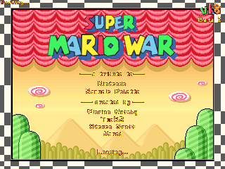
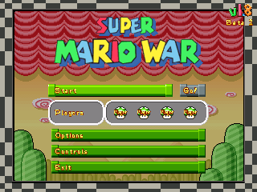
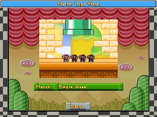
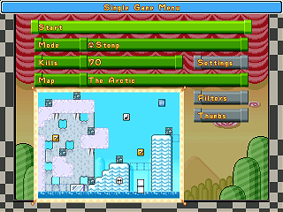
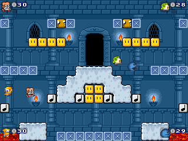
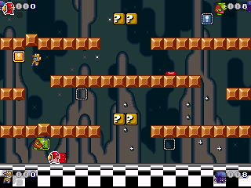

Getting Started

Super Mario War is a game for up to four players with many different modes of play. The basic goal of the game is to be the last player standing, and to accomplish this goal you must jump on your opponents' heads to kill them. There are many Mario-themed items you can use to help you kill your opponents, as well. In addition, there are several variations on this basic gameplay mechanic which you can try, such as Chicken, Capture The Flag, and so on. Plus, for those who enjoy customization, there are several aspects of the game which you can tweak to your liking through the Options menus, and if you like, you can make your own maps, skins, and other custom content to use (or download others' to use), too!
This section of the manual explains how to navigate the game's menus, and contains a short explanation of Tournaments and Tours as well.
The Main Menu

From this menu, you can access everything else in the game.
Team and Character Selection


From this screen, you can configure who is using which character and is on which team.
Game Selection

From this menu, you can select your game mode, select the map you wish to use, change various mode settings, and tag your maps for easy selection. (When playing a Tour, all options on this screen, besides Start, are disabled.)
Playing the Game

The main goal of the game is to stomp on your opponents' heads to kill them, although depending on the map you're playing on, you may be able to kill them in other ways, such as with items. There may also be additional rules or a different way of winning, depending on the mode you are playing; for information on these, you can check the Game Modes section of this manual. For information on the controls you'll be using to play the game, check out the section on Controls, below. And to learn about the different items and map elements you can use to turn the tables on your opponents, take a look at the Items and Special Blocks sections, towards the middle of the manual.
Tournaments and Tours
 
In a Tournament, players play games until one player has amassed a certain number of wins. The number of the Tournament determines how many wins are required (so, if you pick Tournament 4, you have to win four times). Each time a player wins, they will receive an icon on the scoreboard (first picture, above). This icon will be representative of the mode played.
In a Tour, players play a series of predetermined games ("tour stops"). At the end of each game, players receive points based on how well they placed, and icons will be displayed on the scoreboard (second picture, above) to show just how each player placed in that round. Tours can be created by making a text file in the game's Tours subdirectory, following the correct format (check out simple.txt for more info). It is possible to designate how valuable each individual tour stop is (this information is displayed along the top of the scoreboard - see the screenshot), as well as which tour stops grant a bonus item to the winner.
At the end of a Tournament, or after every game within the Tournament if that option is set (see the Options section towards the end of this manual), the winner will get a chance to spin the bonus wheel to acquire an item that they can use in the next game or games. However, in Tours, the bonus wheel will only appear in places where the tour's creator designates it, regardless of any current settings. Tour stops with this opportunity are represented on the scoreboard as small winged yellow boxes.